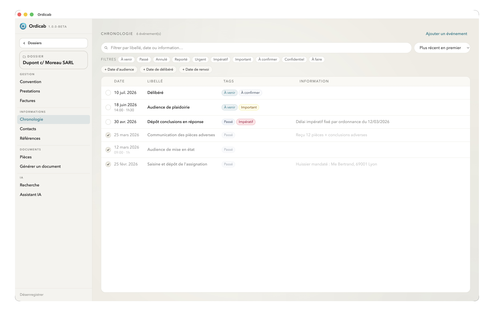

Qu'est-ce qu'Ordicab ?
Ordicab est une application de bureau pour avocats solo et petites structures. Elle centralise la gestion des dossiers, des contacts, des documents, des conventions d'honoraires, de la facturation et des modèles — et intègre des assistants IA adaptés aux exigences de confidentialité d'un cabinet.
À qui s'adresse Ordicab ?
Ordicab est conçu pour vous si vous :
- gérez un portefeuille de dossiers avec des contacts, des documents et des échéances ;
- travaillez en solo ou en petite structure et souhaitez un outil simple sans abonnement serveur ;
- voulez intégrer l'IA dans votre travail sans exposer les données de vos clients ;
- tenez à garder vos données en local, sur votre propre machine.
Architecture de données
Ordicab repose sur une structure à trois niveaux :
- Cabinet — les informations de votre structure : nom, coordonnées, taux, paramètres. La base de référence partagée par toute l'application.
- Dossiers — chaque affaire est un dossier autonome avec ses contacts, ses documents, sa chronologie, sa convention, ses prestations et ses factures.
- Éléments — les pièces constitutives d'un dossier : contacts, documents, prestations, etc. Chacun est structuré et exploitable par l'IA.
Ce qu'Ordicab fait
Une fois en place, Ordicab vous permet de :
- Gérer chaque dossier : documents, contacts, dates clés, références, notes, chronologie accessibles en un clic.
- Suivre les conventions et la facturation : conventions d'honoraires, phases, saisie des prestations, préparation des factures — tout est lié au dossier.
- Créer des documents depuis des modèles paramétrables qui se remplissent automatiquement avec les données du dossier.
- Travailler avec l'IA : assistant intégré ou agents externes — selon le niveau de confidentialité requis.
Ce qu'Ordicab ne fait pas
L'application ne déplace, ne renomme et ne supprime jamais vos fichiers. Elle lit les documents que vous lui associez et conserve ses métadonnées à part.
État du projet
Ordicab est fonctionnel mais en version bêta. Les fonctionnalités, l'ergonomie et les traitements IA font l'objet d'itérations continues. Ne l'utilisez pas avec des données réelles de clients tant que la version stable n'est pas publiée.
Les retours de professionnels du droit sont les bienvenus et contribuent directement à l'orientation du projet.

Vue d'ensemble d'un dossier — informations principales, onglets et navigation
Suivant : Installation & mise en route →